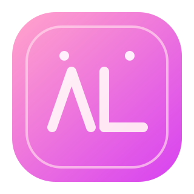

Core Features
- Lexer + Parser + Interpreter
- Module system antar file
.mc - CLI + package manager
moca - Standard library bawaan

Bahasa Moca untuk frontend modern: simple syntax, module system, dan DX yang manis.
GitHub Repo.mcmocaStatus: MVP-ready for real projects and internal tools.
Untuk enterprise production, tambah CI matrix, security audit, benchmark, dan contract testing.
Klik "Preview Result" untuk melihat output simulasi.
Catatan: preview ini simulasi dokumentasi untuk promosi; runtime asli ada di CLI mclang run.
Other, root default.File deploy sudah ada: vercel.json, railway.toml, Dockerfile.